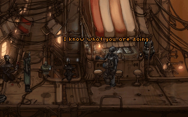

Primordia
Dieser Artikel wurde für die folgenden Ubuntu-Versionen getestet:
Ubuntu 16.04 Xenial Xerus
Ubuntu 14.04 Trusty Tahr
Zum Verständnis dieses Artikels sind folgende Seiten hilfreich:
Primordia  spielt in einer postapokalyptischen und menschenleeren Zukunft. Die wichtigsten Ressourcen dieser Zeit sind Energie und Ersatzteile. Das Spiel erzählt die Geschichte des stoischen Roboters Horatio Nullbuilt und seinem selbstgebauten und vorlauten Droidenfreund Crispin. Die beiden Roboter sammeln Schrott um ihr Shuttle zu reparieren. Eines Tages wird ihre Idylle gestört. Ein ihnen haushoch überlegener Roboter stiehlt ihre Energiequelle. Sie machen sich auf um den Dieb zu verfolgen...
spielt in einer postapokalyptischen und menschenleeren Zukunft. Die wichtigsten Ressourcen dieser Zeit sind Energie und Ersatzteile. Das Spiel erzählt die Geschichte des stoischen Roboters Horatio Nullbuilt und seinem selbstgebauten und vorlauten Droidenfreund Crispin. Die beiden Roboter sammeln Schrott um ihr Shuttle zu reparieren. Eines Tages wird ihre Idylle gestört. Ein ihnen haushoch überlegener Roboter stiehlt ihre Energiequelle. Sie machen sich auf um den Dieb zu verfolgen...
|  | |
| Menü | Spielszene |
Vorbereitung¶
Zuerst müssen die benötigten Spieledateien aus dem Internet heruntergeladen werden:
Desura¶
Nach dem Erwerb des Spiels auf Desura kann es über Primordia als PrimordiaSetupV12.exe heruntergeladen werden.
Gog¶
Über Primordia kann das Adventure erworben werden. Aus der persönlichen Bibliothek die Datei setup_primordia_2.0.0.2.exe herunterladen.
Indie Royale¶
Sofern man das Spiel im the Hammerhead Bundle erworben hat kann dieses (PrimordiaSetupV12.exe) aus der Sammlung heruntergeladen werden.
Hinweis:
Das Spiel kann in Steam eingelöst werden.
Publisher¶
Nach dem Erwerb des Titels über die Seite des Publishers kann dieses (PrimordiaSetupV12.exe) von der persönlichen Seite heruntergeladen werden.
Installation¶
Im nächsten Schritt gilt es die .exe-Datei, mittels innoextract, zu entpacken [1].
Innoextract¶
Hierfür den folgenden Befehl ausführen:
innoextract PrimordiaSetupV12.exe
Die Ausgabe ähnelt der folgenden:
Extracting "Primordia" - setup data version 5.3.10 - "app/Primordia.exe" (928 MiB) - "app/acsetup.cfg" (309 B) - "app/audio.vox" (2.73 MiB) - "app/speech.vox" (491 MiB) - "app/winsetup.exe" (144 KiB) Done.
Abschließend den Ordner app anschließend nach Primordia umbenennen und nach ~/Spiele verschieben.
Spielengine¶
Um das Spiel unter Linux nativ verwenden zu können ist es nötig, die Spiele-Engine zu erstellen [2]. Nachdem dieser Zwischenschritt vorgenommen wurde, kann das jeweilige Spiel mit
ags ~/Spiele/Primordia/Primordia.exe
gestartet [3] werden. Auf Wunsch einen Menüeintrag [4] vornehmen. Alternativ kann ein Startskript verwendet werden.
Startskript¶
Im Homeverzeichnis den Ordner ~/bin anlegen und die Datei Primordia.sh mit dem folgenden Inhalt erstellen [5]:
1 2 3 | #!/bin/sh export LD_LIBRARY_PATH=.:$LD_LIBRARY_PATH exec ags ~/Spiele/Primordia/Primordia.exe |
Nach dem Setzen der Ausführrechte [6] kann das Spiel über Primordia.sh aufgerufen [3] werden.
Konfiguration¶
Die Konfigurationsdatei acsetup.cfg aus dem Spieleordner kann mit einem Editor bearbeitet werden.
Demo¶
Eine Demoversion des Spiels kann von der Seite des Publishers  heruntergeladen und wie die Vollversion installiert werden.
heruntergeladen und wie die Vollversion installiert werden.

Infobox¶
| Primordia | |
| Genre: | Adventure |
| Sprache: | |
| Veröffentlichung: | 2012 |
| Publisher: | Wadjet Eye Games |
| Systemvoraussetzungen: | 1.2 GHz Prozessor / 64 MB Arbeitsspeicher / 1.5 GB Festplattenspeicher |
| Medien: | Download |
| Strichcode / EAN / GTIN: | - |
| Läuft mit: | nativ |
- Erstellt mit Inyoka
-
 2004 – 2017 ubuntuusers.de • Einige Rechte vorbehalten
2004 – 2017 ubuntuusers.de • Einige Rechte vorbehalten
Lizenz • Kontakt • Datenschutz • Impressum • Serverstatus -
Serverhousing gespendet von